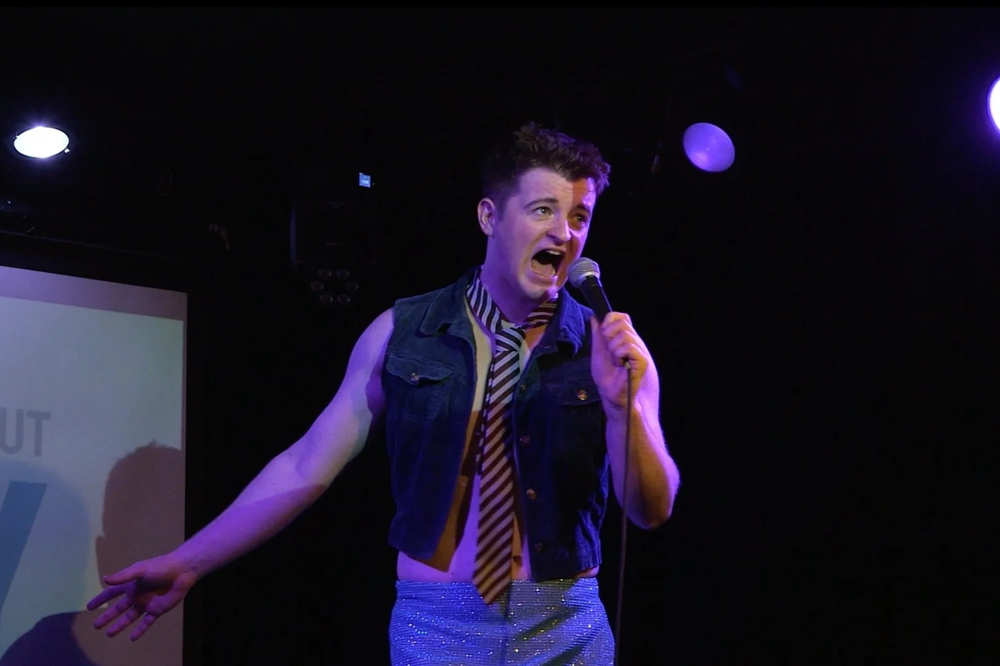
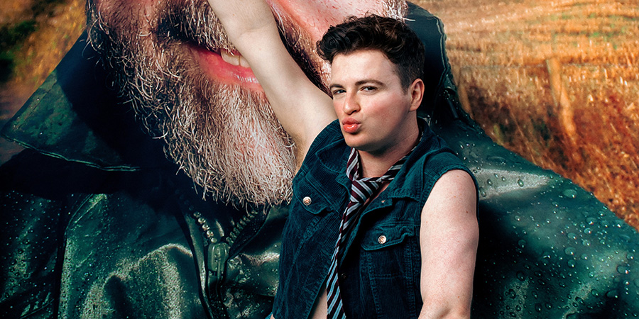

Now, directed by Fringe First winner Chris Larner, bouncing between genres and intertwined with footage of his late father’s show, Simon performs an hour so impressive that he’ll never be forgotten.
Following an acclaimed Edinburgh run, Dead Dad Show is embarking on a UK Tour partnering with leading end of life charity, Marie Curie, and trans-led organisation, Not A Phase.
★★★★★
Five stars somehow feel inadequate for this joyous, hilarious, brilliant, witty, sparkly campfest of a show.
Scotsman
★★★★★
From start to finish, this is a superbly performed piece... Simon deserves the awards he dreams about getting
Reviews Hub
★★★★
A tender, heartfelt tribute, the much-mocked ‘serious bit’ of dead dad shows proves affecting yet again
Chortle
★★★★
A truly original take on a Dead Dad Show sending up every style of showbiz pretension
Beyond The Joke
★★★★
A laugh-packed, emotional ride. A glorious send-up of trauma porn that’s nevertheless also a touching tribute to a late father.
The List
